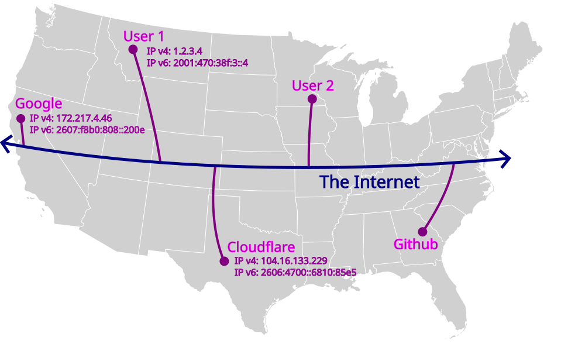
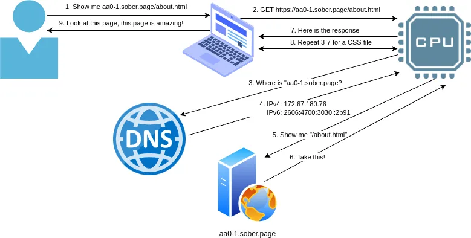

Website Primer¶
At a basic level, a website is just a very simple collection of text files with special syntax and links that point to other files in the collection. The special syntax tells web browsers how a file (or “web page”) should be displayed.
For our purposes, a website is a place on the internet that lets you share information about your group, but this definition does’t explain anything about how a website works or how/why anyone would be able to find it.
Some foundational knowledge is required in order to understand these basics, and to troubleshoot issues that may be encountered. These foundations are similar to understanding that vehicles need gasoline for propulsion–this all comes together at the end.
This chapter demystifies how websites and the Internet operate and lays the groundwork for the remainder of this handbook.
Internet Protocol¶
“The Internet” is a giant network of computers that are connected to each other. This communication happens across “paths” that can be thought of as roads on a map. These paths can be physical (network cable), wireless (wifi), or cellular (cell).
“Internet Protocol” (IP) is the standard that defines how the computers on this giant network identify one another. IP provides a set of rules that define how a computer gets an “IP address” on the network. This functions just like a physical mailing address and allows one computer to communicate with another computer on the network.
Recap
Internet: Giant network of computers, like a road network.
IP: Addressing system that computers use to identify one another
For many years, internet traffic managed fine using version 4 of IP (IPv4);
this version uses address that are like the street portion of a mailing address
(e.g. 12 Main St).
As the giant network grew, capacity was reached, and cracks started to form. In 2011, the pool of unallocated IPv4 addresses was officially depleated. To resolve this, IPv6 was released.
From a very high level, IPv6 is similar to IPv4, with a much longer address
format that includes extra features. Where IPv4 is akin to a street address,
IPv6 is more similar to using a full mailing address (e.g. Attn: Personal
Name, 12 Main Street, Cityville, Statestown, 12345, U.S.A.).
Check Point
The following list contains (valid) IPv4 and IPv6 addresses; can you guess which addresses are IPv4 and which are IPv6?
112.18.1.1
2001:0bc4:9216:dead:beef:9a84:a158:34f7
8.8.8.8
210.133.240.120
20:4:3::82
2606:4700:3000::b44c
147.47.30.4
Answer: Anything with a colon (:) is IPv6.
Each version has their own features, but the knowledge that two versions exist is sufficient for the remainder of this handbook.
Internet Superhighway:
Nerd Note
The “rules of the road” that Internet traffic must follow to reach its destination are known as TCP (stateful) and UDP (stateless).
Domain Name System¶
Domain Name Systems (DNS) provide an address book that links computer “names” to IP addresses. This is like a phone book that allows one computer to find out the address of another computer using a human-friendly name.
The proper term for the “name” of a computer is Fully Qualified Domain Name
(FQDN). This is the “full name” of the computer, similar to a first
and last name.
Recap
Computers ask DNS for a FQDN and receive an IP address.
Wikipedia provides a good place to dive deeper into this topic.
Ports and Services¶
When “internet traffic” reaches the computer at the IP address, that it found from DNS, this “destination computer” needs to double check the address and then determine how to repond.
Each computer on the internet is similar to an apartment building, with just a very basic path to each individual apartment; most individual apartments are empty, but a few have specialists that can respond to a specific type of request.
Computers that have a specialist capable of responding to requests are known as “servers,” and the individual apartment they are located in is known as a “port.”
Recap
Port numbers identify the specialist being requested from a given IP address.
In the same way standardized abbreviations exist to describe specific specialties, standardized port numbers exist to describe specific services that may be run by a server.
Specialty Examples:
Port |
Abbreviation |
Specialty |
|---|---|---|
- |
MD |
Medical Doctor |
- |
PI |
Private Investigator |
53 |
DNS |
Domain Name Services |
80 |
HTTP |
HyperText Transfer Protocol |
443 |
HTTPS |
HyperText Transfer Protocol (Secured) |
25 |
SMTP |
Simple Mail Transfer Protocol |
When one computer makes a request to another computer, it will specify the specialist that it needs to communicate with. If a specialist is available, then they will send a response back.
The specialist that is responding to requests is known as a “service.” Likewise, a “web server” is simply a computer that runs a specialized service which knows how to talk the web language, which is officially HTTP/S.
Stop and Think
What is the difference between an IP address and a port?
The Internet¶
The Internet is vast, and website traffic is just one type of traffic. There are many rules (standards) that govern how these services are expected to behave, which enables all the different types of traffic to coexist in harmony. This is similar to the rules (laws) that govern how people are expected to drive on a road network.
This workflow covers the standards that will be used throughout this handbook:
Users will try to open a website using a computer
Computers use DNS to find the IP address of a website
- DNS uses port 53 to query a global directory
Such as Google DNS at 8.8.8.8 (for IPv4) or 2001:4860:4860::8888 (for IPv6)
Or Cloudflare at 1.1.1.1 (for IPv4) or 2606:4700:4700::1111 (for IPv6)
Computers will contact the IP address that was returned
HTTP uses port 80 to talk to the web server
Web Servers at the other end of the connection will send back the website
Stop and Think
If (step 0) becomes a user opening an email client, how will steps 4 and 5 also change?
Uniform Resource Locator¶
In order to reach a specific page on a specific website on the vast internet, a standardized format exist to identify how a specific resource should be requested. This format is known as a Uniform Resource Locator (URL) and is packed with lots of information.
The format for a URL is:
scheme "://" [fqdn] path ["?" query] ["#" fragment]
Note: Anything in square brackets is optional.
- For example, the following URL points to this exact section of text:
https://handbook.recoverysource.net/essentials/websites.html#url
scheme: We want to talk to the
https“specialist” (or service),fqdn: who resides at
handbook.recoverysource.net;path: we would like them to share a copy of
/essentials/websites.html,fragment: and we will jump to the
urlsection.
Stop and Think
What is the full sequence of events a browser will take to resolve this fqdn and request the page (path) from the named service (scheme)?
Web Page¶
In the earlier days of the Internet, HyperText Markup Language (HTML) was adopted
as the standard format that files use to describe how a web browser should display
each page (or resource). This “markup” adds support for tags like
<b> for bold or <ul> for unordered lists.
Further Reading
The ‘History of HTML’ chapter of ‘Raggett on HTML 4’ provides a great place to start learning about this fascinating history.
Visit this demonstration.html page to see how the following HTML is displayed:
<!doctype html>
<html lang="en">
<head>
<title>Demonstration Page - Recovery Source</title>
<link rel="shortcut icon" href="https://handbook.recoverysource.net/_static/favicon.ico"/>
</head>
<body>
<h1>Demo Heading</h1>
<p>This is a sample paragraph that describes the following list:</p>
<ul>
<li>This is one list item.</li>
<li>This is another item.</li>
<li>This item has <b>bold text</b>.</li>
</ul>
<p>Click
<a href="https://handbook.recoverysource.net/essentials/websites.html#webpage">HERE</a>
to continue learning about websites!</p>
</body>
</html>
Recall
At a basic level, a website is just a [collection of web pages] with syntax and links that point to other files in the collection. The special syntax tells web browsers how a file (or “web page”) should be displayed.
Cascading Style Sheets (CSS)¶
HTML pages can also include CSS to change the “style” of various elements, such
as making all text in list items (<li>) use larger text, or adding a
background image to a page.
These CSS “style sheets” are often maintained in separate files, in order to separate presentation from content.
For example, demonstration_with_css.html is exactly like demonstration.html,
with the addition of <link rel="stylesheet" href="demonstration.css">.
JavaScript (JS)¶
HTML pages can also include JavaScript, which can be used to add dynamic content
such as making interactive elements respond to user input or updating page content in real-time.
These files can also be be maintained in separate files. These JavaScript “scripts” are often maintained in separate files, in order to separate syntax from content.
This demonstration_with_js.html example is exactly like demonstration.html,
with the addition of <script>alert("Hello visitor!");</script>.
Recap
A web page is a text file with HTML markup (tags) that tell a web browser how the file should be displayed to the user. These files often include other elements like CSS and JS to improve appearance and functionality of the website.
Dynamic Websites¶
Maintaining a collection of HTML files by hand is tedious, time consuming, and error-prone. Dynamic website solutions, like Wordpress, offer an alternative to maintaining individual files.
This is additional software that runs on a web server and connects to a database, which stores configuration for how every page should be displayed and what the content of each page should be. These solutions also allow website administrators to manage user accounts which can log in and make changes to the website through the website itself.
Instead of a web service returning files exactly as they are stored, requests are forwarded to a dynamic website solution that looks into a database to build the requested page if the data exists. Most of these dynamic website applications support user accounts, which can log into the website in order to add, remove, or update website content.
While this approach introduces a tremendous amount of flexibility, it naturally creates brand new classes of security vulnerabilities. Users can now be tricked into exposing their credentials to a malicious website clone, or they can unintentionally upload malicious content. The sheer volume of features means that these projects also have a never-ending supply of currently-undiscovered security flaws, many which do not require any user account to exploit.
Recap
Dynamic Websites use software that builds (or generates) each page at the time it is requested. This software often includes support for user accounts that can log in and create/edit/delete content on the website, through the website itself.
In order to prevent (often hidden) vandalism, it is critical that administrators of dynamic websites apply updates as soon as they have been tested and review logs to monitor for suspicious modifications. If a website is the victim of a targeted attack, regular updates are unlikely to be sufficient and there will be times when restoring from a backup is the only option, so it is also critical to verify that the backup works and is not accessible to the compromised website.
Static Website¶
Static Site Generators (SSG) are a middleground between Dynamic Websites and maintaining every Web Page by hand. These generators use text files, written in an easier-to-read markup language, and then create all pages on a website, using template files to ensure everything looks the same.
In other words, SSGs turn simple source material into the many HTML pages that make up a complete website.
For example, our earlier demonstration.html page could have been created from this Markdown document:
Demo Heading
------------
This is a sample paragraph that describes the following list:
- This is one list item.
- This is another item.
- This item has **bold text**.
Click [HERE](https://handbook.recoverysource.net/essentials/websites.html#webpage)
to continue learning about websites!
This approach ultimately generates every page that a user may want to visit and keeps the role of a web service very simple.
Recap
Static Websites use Static Site Generators (SSG) to turn reader-friendly text files into computer-friendly HTML files using templates to ensure every page looks similar.
The lack of dynamic web software negates nearly all common security risks and provides an inherently lightweight website, which many platforms (such as GitHub Pages, Gitlab Pages, Cloudflare Pages, etc.) are happy to host for free, as an incentive to use their service.
Web Software¶
There are MANY website generation options available, and each has their own pros and cons. Generally, the more dynamic a product is, the more regular security updates need to be a top priority.
Dynamic and Static Website Security by S. Ranby provides a more detailed comparison between static and dynamic website solutions.
Comparison |
Static Website |
Dynamic Website (self-hosted) |
Hosted Wordpress |
|---|---|---|---|
Requires a web service to return content |
X |
X |
X |
Requires additional software to generate requested pages |
X |
X |
|
Typical cost for budget-friendly hosting |
$0/yr |
$300+/yr |
|
Initial learning curve |
High |
Medium |
Low |
Maintainance difficulty/burden |
Low |
High |
Medium |
Typical frequency of critical (security) issues |
|||
Backups |
Note
This handbook is primarily intended for users who wish to deploy our Website Template which uses Hugo to build a static website. Remaining chapters will focus on this goal.
Follow Along¶
We are going to investigate https://example.com/:
Open dig (online) in a web browser
Type the domain (
example.com) and locate theArecordThis is the
IP addressour computer will use to talk to that websiteNow open https://example.com/
Right-click on the empty background and choose
View page sourceThis is the actual HTML webpage that the server returned to your browser
By the end of this handbook, you will understand how to read this file.
Chapter Recap¶
A web server is another computer on the internet that has a web specialist in room #80, and maybe another in #443 if security is enabled. The job of a web server is to receive requests for files and then return the content of those HTML files.
Web browsers will use the Uniform Resource Locator, found in the “address bar,” to look up an IP address and request a specific path from the web service.
Some websites are dynamic and generate each page as it is requested, while others are static and generate all pages any visitor may want to view while being published.
The entire process from the perspective of a web browser:
Workflow of a Web Request

User instructs their web browser to open a website
Browser begins to construct the page
Steps 3 through 7 are repeated for any extra content, such as CSS, Javascript or images
The constructed page is delivered to the user
That’s really all there is to website fundamentals! Having a basic understanding of these building blocks will enable you to understand what is being done, why it is done that way, how to adapt it to your needs, and how to troubleshoot potential issues. This fundamental knowledge will also enable you to clearly communicate issues when you run into problems that you cannot solve yourself.